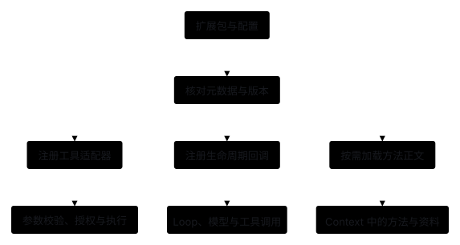
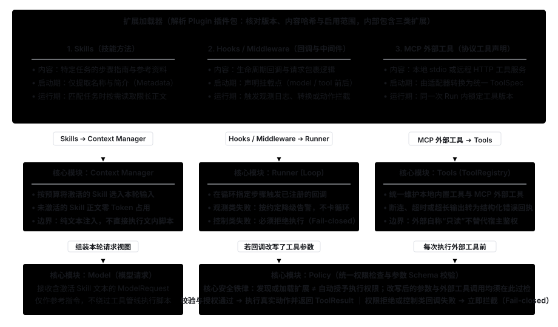
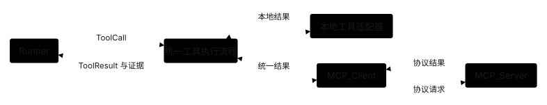

Extensions: Connect Skills, Hooks & External Tools
1. Starting Problem: Why Must Different Extension Mechanisms Not Be Conflated into a Single "Plugin Function"?
When extending an Agent system, five common extension mechanisms serve fundamentally different responsibilities:
- Skill (procedural guide): Provides step-by-step instructions and reference materials for a specific task type, loaded on demand into the model's input (Context).
- Hook (lifecycle callback): Triggers observability or interception logic at fixed lifecycle points such as run start or before/after tool execution.
- Middleware: Wraps model requests or tool calls to uniformly transform inputs, handle retries, or log execution.
- MCP (Model Context Protocol): Connects external tool servers, resources, and prompt templates through a standardized wire protocol.
- Plugin (distribution bundle): Packages Skills, Hooks, and tool declarations together for unified versioning, integrity verification, and distribution.
Core security boundary: Discovering or loading an extension never automatically grants execution permissions.

2. Module Collaboration: Which Core Module Does Each Extension Type Plug Into?
- Skills → Context Manager: Procedural instructions and reference materials are handed to Context Manager to be selected on demand into the current turn's input, without automatically executing any scripts mentioned inside them.
- Hooks / Middleware → Runner: Lifecycle callbacks register at designated points in Runner; if a callback rewrites tool arguments, those arguments must pass through schema validation and Policy authorization again.
- MCP External Tools → Tools: Adapted by Tools into unified internal
ToolSpecdeclarations and subjected to the exact same Policy permission checks before execution. - Failure isolation posture: Ordinary observability callbacks can degrade with a warning on failure, whereas control callbacks that guard against dangerous actions must fail closed (block execution) if they error out.

3. Comparing 3 Loading Approaches for Skills
A. Always-On Full Skill Bodies
- How it works: Read the full text of every Skill at startup and concatenate all of them into the system prompt on every turn.
- Best for: Systems with very few, very short, static instructions; as the Skill library grows, this quickly bloats the context window and causes conflicting instructions.
B. Metadata Discovery + On-Demand Body Loading (Recommended Baseline)
- How it works: Keep only each Skill's name and short description (Metadata) in context by default; read the full Skill body within size limits only when it matches the current task or is explicitly activated by the user or model (see the Agent Skills Specification).
- Best for: Small-to-medium Skill libraries—saves substantial always-on tokens while clearly recording which Skill version was activated on a given turn.
C. Retrieval-Driven Skill Library
- How it works: For large Skill collections, retrieve candidate Skills by task query first, then verify applicability, version, and dependencies before loading.
- Best for: Large domain Skill repositories; requires maintaining a search index and preventing near-duplicate Skills from injecting contradictory rules.
4. Comparing 3 Implementation Patterns for Hooks & Middleware
A. In-Process Function Callbacks
- How it works: Invoke registered in-process Python functions directly at lifecycle points such as
run.start,model.before,tool.before, andtool.after. - Pros & cons: Clean typing and minimal latency for trusted built-in logic; however, callbacks share memory and permissions with the host process, and a blocking callback stalls the main loop.
B. Out-of-Process Event Protocol (Subprocess Hooks)
- How it works: Pass event JSON via
stdin, read control decisions fromstdout, and capture diagnostics fromstderr, managed with timeouts and exit codes. - Pros & cons: Language-agnostic, process-isolated, and easy to kill on timeout; ideal for integrating external policy or lint scripts.
C. Call-Wrapping Middleware
- How it works: Wrap model or tool calls in an onion pipeline (outer pre-processing → inner pre-processing → actual call → inner post-processing → outer post-processing).
- Caveats: Execution ordering directly affects correctness—for example, wrapping a retry middleware around a non-idempotent write tool causes duplicate writes, and computing the token budget before an inner middleware injects extra tool definitions causes budget undercounting.
| Extension Mechanism | Best For | Core Benefit | Main Implementation Cost |
|---|---|---|---|
| In-process callbacks | Trusted, lightweight internal event handling | Simple, direct, zero serialization overhead | Shares memory and permissions; crashes can take down the host process |
| Out-of-process Hooks | External scripts & independent timeout enforcement | Process isolation, easy output caps and timeouts | Requires maintaining JSON wire schema, exit codes, and subprocess cleanup |
| Middleware | Reusable cross-cutting transforms, logging & control | Decouples cross-cutting concerns cleanly | Debugging ordering and side effects across deep middleware stacks |
5. Where Should MCP External Tools Plug In?
MCP: Plugging into the Unified Execution Pipeline via Tool Adapters (Not Yet Wired Up)

- Adapt uniformly into internal contracts: After connecting to an MCP Server and discovering tools, convert them into unified internal
ToolSpecdefinitions and pin their versions for the duration of a Run (see the MCP 2025-11-25 Architecture Spec). - Reuse the validation & authorization pipeline: Model-proposed MCP tool calls must still pass through registry argument validation, Policy permission checks, output size limits, and error routing; an external server claiming its tool is "read-only" never replaces host Policy authorization.
- Manage connection lifecycles: Local
stdiosubprocesses must restrict inherited environment variables and clean up child processes; remote HTTP servers must handle authentication, timeouts, and disconnect errors.
6. Open-Source & Industry Implementation Comparison
- Deep Agents (Source Verified): SkillsMiddleware separates Skill discovery from request-time injection and assembles the middleware stack in a fixed order in graph.py.
- Claude Code (Official Docs): Its Hooks guide explicitly defines trigger points (such as pre/post tool call) along with the bounded set of control decisions each hook event may return.
- pi (Source Verified): agent-session.ts exposes well-defined single-step extension callbacks before and after context compaction rather than letting plugins arbitrarily replace the core state machine.
- AgentScope Java (Official Docs): Skill assembly supports loading Skill materials from workspaces and repositories while decoupling material loading from runtime component configuration.
7. How Are Plugin Bundles Packaged and Upgraded?
When distributing Skills, Hooks, and tool declarations together, package them in a directory structure with a manifest file:
plugin/
manifest.json Name, version, host interface version, content hashes
skills/ Skill instruction files
hooks/ Hook declarations
tools/ Tool or MCP connection declarations
- Install-time verification: Check for path traversal, verify content hashes, and validate compatibility with the host interface version.
- Pin versions during a Run: Keep the active plugin version fixed throughout a single Run and apply upgrades starting on the next Run, preventing mid-run version switches from causing inconsistent tool receipts.
8. Current Implementation & Unimplemented Scope
- Implemented (as of Stage 3: Explicit Function Registration): Local Python functions are registered explicitly with permission declarations via
ToolRegistry.register()(e.g.,examples/count_lines.py; see Stage 1). - Not Yet Implemented (deferred to Stage 8 On-Demand Extensions): Skill directory scanning and on-demand injection, Hook callback protocol, Middleware stack, MCP client integration, and Plugin bundle management.
9. Expected Outcomes (Future Extension Integration Exercise)
When integrating on-demand Skill loading and read-only MCP tools in a later stage, verify against these criteria:
Expected Outcomes:
- Zero context injection for inactive Skills: Only Skill metadata is loaded by default; unactivated Skill bodies consume zero model context budget.
- Loading never auto-executes scripts: Reading a Skill body strictly enforces path-traversal and size limits and never automatically executes external scripts mentioned in the text.
- Controlled degradation on MCP errors: When a local read-only MCP server disconnects, changes its schema, or returns an oversized payload, the adapter intercepts it cleanly and converts it into a structured error receipt.
- Permission boundaries cannot be bypassed: No extension (Skill, Hook, or MCP tool) can bypass Policy to perform unauthorized write operations.